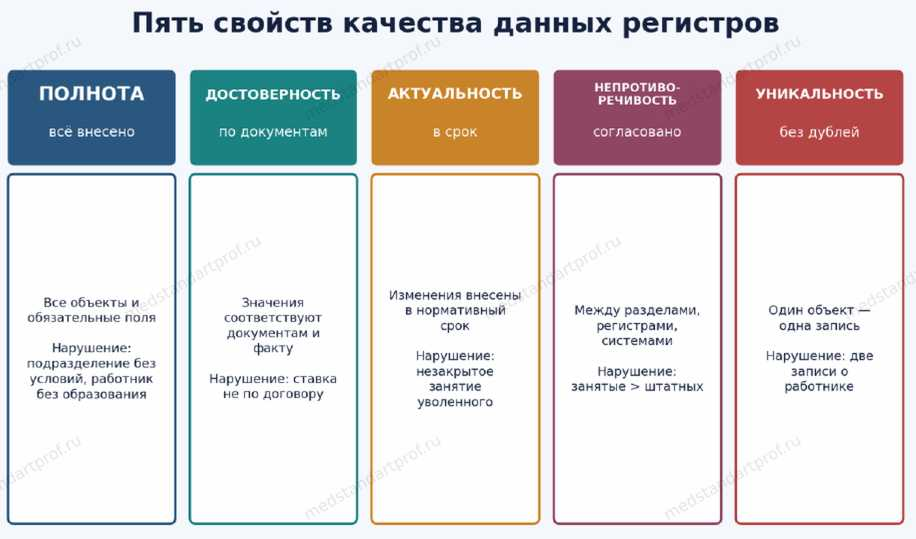
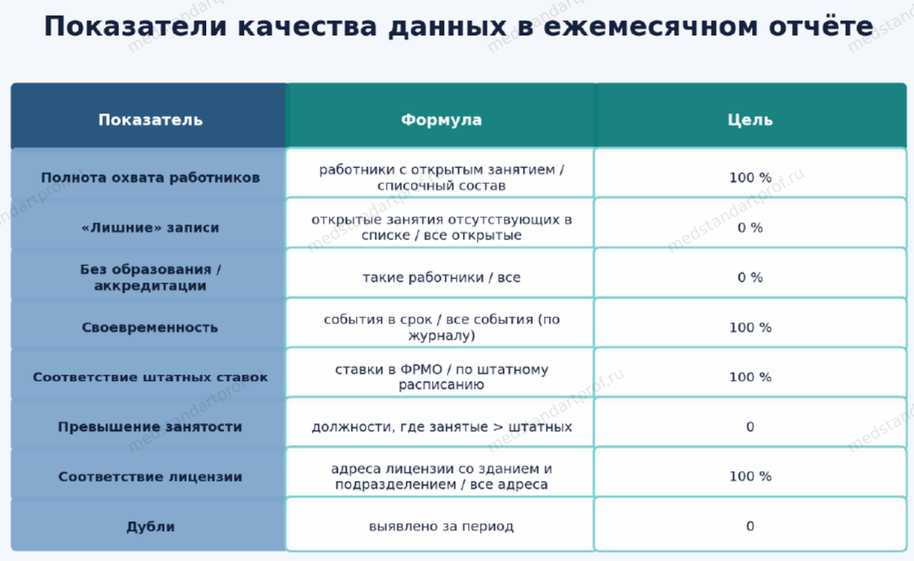
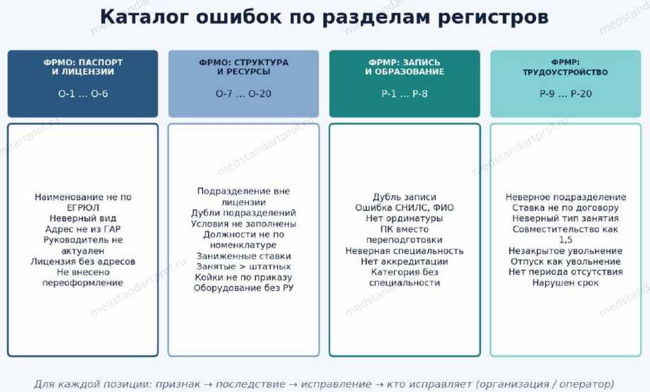
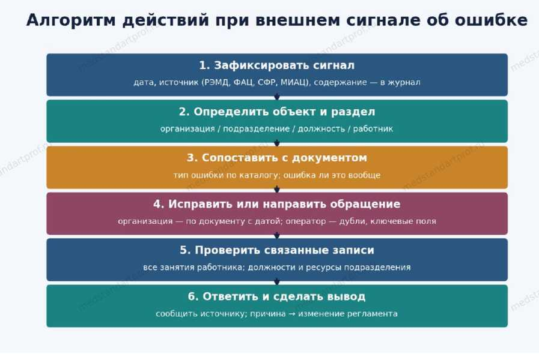
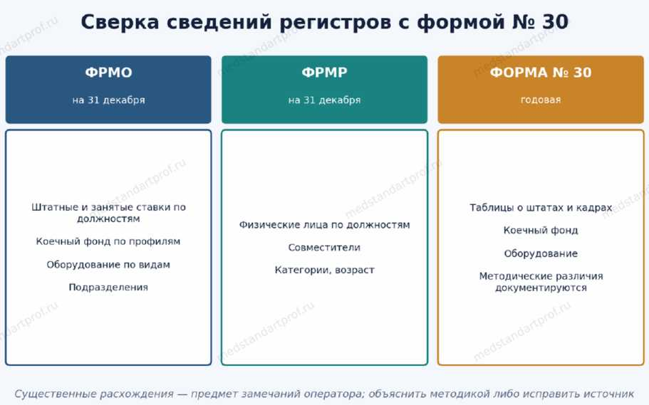
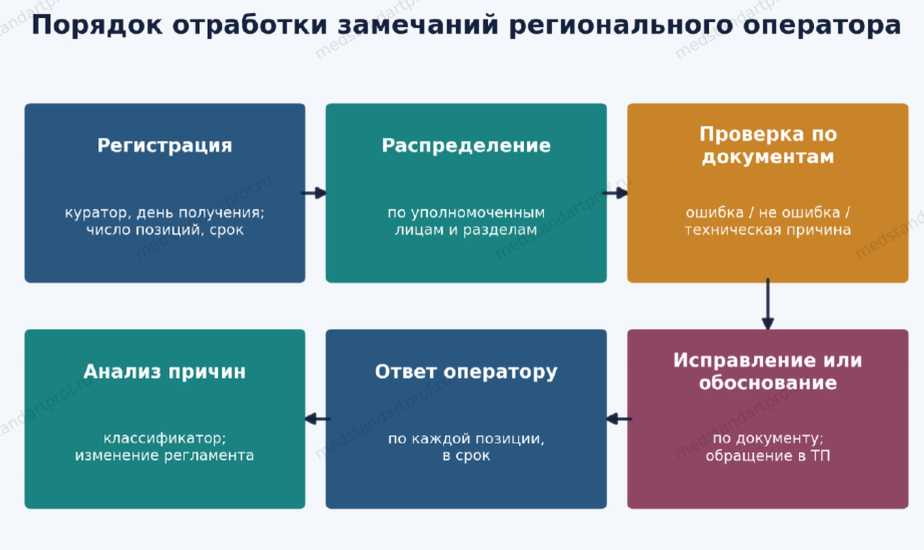

Качество данных регистров — не абстрактная характеристика, а измеримое свойство, по которому организацию оценивают оператор единой системы, орган управления здравоохранением и проверяющие органы. Организация, которая не измеряет качество собственных данных, узнаёт о проблемах из внешних замечаний, когда исправление уже требует объяснений. Лекция вводит систему требований и показателей качества данных, которую организация применяет для самоконтроля.
Цель лекции — определить требования к качеству данных регистров, показатели их измерения, механизмы контроля со стороны единой системы и региональных операторов, а также построить систему внутреннего контроля качества данных.
1. Пять свойств качественных данных
|
Свойство |
Определение |
Пример нарушения |
|
Полнота |
Все объекты, подлежащие учёту, внесены; все обязательные поля заполнены |
Подразделение без условий оказания помощи; работник без сведений об образовании; оборудование внесено выборочно |
|
Достоверность |
Значения соответствуют первичным документам и фактическому положению |
Ставка не по договору; должность не по приказу; адрес не по лицензии |
|
Актуальность |
Сведения отражают текущее состояние, изменения внесены в срок |
Незакрытое занятие уволенного; старое штатное расписание; не внесённое переоформление лицензии |
|
Непротиворечивость (согласованность) |
Сведения согласованы между разделами, регистрами и внешними системами |
Занятые ставки больше штатных; подразделение по адресу вне лицензии; должность не соответствует специальности аккредитации |
|
Уникальность |
Каждый объект представлен одной записью |
Дубли работников, подразделений, единиц оборудования |
Требования полноты, достоверности и актуальности прямо вытекают из обязанностей поставщика информации по Положению о единой системе
и Порядку № 708н; непротиворечивость и уникальность обеспечиваются форматно-логическим контролем (пункт 22 Порядка) и региональными сверками.
Рисунок 1. Пять свойств качества данных регистров
При сохранении записи система выполняет форматно-логический контроль: обязательность полей, форматы (СНИЛС с контрольным числом, даты, ИНН), допустимость значений (из справочников), логику (дата окончания не раньше даты начала; занятые ставки не больше штатных; уникальность СНИЛС). Ошибка контроля блокирует сохранение и выводит сообщение. Часть проверок выполняется отложенно (например, сопоставление с внешними реестрами) и отражается в статусах записей и отчётах о качестве.
Региональный информационно-аналитический центр (или орган управления здравоохранением) с установленной периодичностью формирует по организациям региона отчёты о качестве данных: перечни записей с ошибками и подозрениями по заданным правилам. Типовые правила:
• работники без сведений об образовании или аккредитации;
• работники с истёкшей аккредитацией, занимающие должности;

• занятия должностей с датой начала более пяти лет назад без изменений при отсутствии подтверждения актуальности;
• превышение занятых ставок над штатными;
• подразделения без штатных должностей; должности без занятий длительное время;
• подразделения по адресам вне лицензии;
• расхождение численности работников с формой № 30;
• отсутствие обязательных характеристик зданий;
• оборудование без регистрационных удостоверений.
Перечни направляются организациям с установленным сроком устранения; неустранённые расхождения учитываются в оценке организации и могут передаваться в контрольные органы.
Оператор проводит федеральные сверки (например, ФРМО с реестром лицензий, ФРМР с федеральным аккредитационным центром и ФИС ФРДО) и публикует показатели качества по регионам; регионы, в свою очередь, распределяют их по организациям.
Организация строит собственный контроль так, чтобы обнаруживать ошибки раньше внешних сверок: текущий (еженедельный), ежемесячный по чек-листам, ежеквартальный по ресурсам, ежегодный перед статистической отчётностью (лекция 3.3).
Для самооценки организация рассчитывает показатели по состоянию на первое число месяца.
3.1. ФРМР
|
Показатель |
Формула |
Целевое значение |
|
Полнота охвата работников |
Работники с открытым занятием в ФРМР / списочный состав медицинского и фармацевтического персонала по кадровому учёту |
100 % |
|
Доля «лишних» записей |
Работники с открытым занятием в ФРМР, отсутствующие в списочном составе / число открытых занятий |
0% |
|
Доля работников без сведений об образовании |
Работники без базового образования / работники с открытым занятием |
0% |
|
Доля работников без аккредитации (сертификата) среди подлежащих |
Работники на должностях, требующих аккредитации, без действующей аккредитации / такие работники |
0 % (с учётом переходных случаев) |
|
Доля расхождений ставок |
Занятия, ставка которых не совпадает с договором (по выборочной проверке) / проверенные занятия |
0% |
|
Своевременность |
События, внесённые в срок / все события месяца (по журналу) |
100 % |
|
Дубли |
Число выявленных дублей записей за период |
0 |
|
Показатель |
Формула |
Целевое значение |
|
Соответствие штатных ставок |
Сумма штатных ставок в ФРМО / сумма по штатному расписанию |
100 % |
|
Доля должностей с превышением занятости |
Должности, где занятые > штатных / все должности |
0% |
|
Соответствие лицензии |
Адреса лицензии, представленные зданиями и подразделениями / все адреса лицензии |
100 % |
|
Подразделения вне лицензии |
Число подразделений по нелицензированным адресам или профилям |
0 |
|
Полнота характеристик зданий |
Здания со всеми обязательными полями / все здания |
100 % |
|
Соответствие коечного фонда |
Койки в ФРМО / койки по приказу |
100 % |
|
Полнота оборудования |
Единицы в ФРМО / единицы, подлежащие внесению по учёту |
100 % |
|
Актуальность участков и населения |
Дата последней актуализации численности не старше установленного периода |
Да |
Показатели включаются в ежемесячный отчёт руководителю; отрицательная динамика — основание для разбора причин.
Рисунок 2. Показатели качества данных в ежемесячном отчёте
Практика сверок показывает, что ошибки распределяются по причинам примерно так:
1. Организационные (большинство случаев): событие не дошло до уполномоченного лица; нет замещения; регламент не исполняется.
2. Методические: уполномоченное лицо не знает правил (должность «по ближайшей», совместительство как ставка 1,5, отпуск по уходу как увольнение).
3. Исторические: данные загружены из прежних систем с ошибками и не выверены.
4. Технические: сбои интеграции, несинхронизированные справочники, ошибки передачи из медицинской информационной системы.
5. Внешние: ошибки в ЕГРЮЛ, реестре лицензий, ФИС ФРДО, протоколах аккредитации.
Меры: для организационных — регламент и контроль (модуль 3); для методических — обучение и памятки; для исторических — единовременная выверка по чек-листам; для технических — взаимодействие с технической поддержкой и разработчиком МПС; для внешних — обращения в соответствующие органы через работника или организацию.
Организация, впервые наладившая ведение регистров или сменившая ответственных, проводит единовременную выверку:

1. Выгрузка всех записей ФРМР по организации; сопоставление со списочным составом; закрытие занятий уволенных; выявление дублей; проверка образования по личным делам.
2. Выгрузка штатного расписания ФРМО; сопоставление с действующим штатным расписанием; корректировка.
3. Проверка структуры и зданий по лицензии и приказу о структуре; закрытие дублей; заполнение характеристик.
4. Инвентаризация оборудования и транспорта; внесение и корректировка.
5. Проверка паспорта по ЕГРЮЛ.
6. Оформление акта выверки с перечнем исправлений; с этого момента — регулярный контроль по регламенту.
Выверка планируется с выделением времени и, при необходимости, временным привлечением дополнительных работников; сроки устанавливаются приказом.
Ежемесячный отчёт куратора руководителю включает: показатели разделов 3.1-3.2 с динамикой; перечень расхождений из региональных сверок и статус их устранения; перечень открытых обращений в техническую поддержку; события, внесённые с нарушением срока, с причинами; предложения по изменению регламента. Отчёт хранится вместе с актами сверок и подтверждает осуществление контроля руководителем.
Качество данных регистров описывается пятью свойствами — полнота, достоверность, актуальность, непротиворечивость, уникальность — и измеряется набором показателей по ФРМР и ФРМО, которые организация рассчитывает ежемесячно. Контроль осуществляется на четырёх уровнях: форматно-логический контроль единой системы, сверки регионального оператора, федеральные сверки и внутренний контроль организации; цель внутреннего контроля — обнаруживать ошибки раньше внешних. Основные причины ошибок организационные и методические, что определяет главные меры: регламент, обучение, единовременная выверка и регулярный отчёт руководителю.
1. Приказ Минздрава России от 28.10.2022 № 708н «Об утверждении порядка ведения персонифицированного учета...», пункты 16, 22-24.
2. Постановление Правительства Российской Федерации от 09.02.2022 № 140 (с последующими изменениями и дополнениями).
3. Приказ Росстата об утверждении формы № 30 «Сведения о медицинской организации» (действующая редакция).
4. Руководства пользователя ФРМО и ФРМР; регламенты информационного взаимодействия. — URL: portal.egisz.rosminzdrav.ru.
5. Чек-листы курса 1-6.
Ошибки в регистрах повторяются от организации к организации: набор типовых дефектов невелик, и для каждого существует стандартный способ диагностики и исправления. Лекция сводит их в каталог, организованный по разделам регистров, с указанием признаков, последствий, способа исправления и того, кто исправляет — организация или оператор по обращению.
Цель лекции — сформировать у уполномоченного лица каталог типовых ошибок ФРМО и ФРМР с алгоритмами диагностики и исправления, включая порядок работы с дублями.
1. Исправление — по документу. Исправленное значение вносится по первичному документу, а не «по логике».
2. История сохраняется. Ошибочные значения не стираются, а заменяются с датой; записи не удаляются, а закрываются — кроме ошибочно созданных без привязок.
3. Порядок зависимостей. Исправления в ФРМО, затрагивающие должности и подразделения, выполняются с учётом занятий в ФРМР; исправления в ФРМР — с учётом свободных ставок в ФРМО.
4. Фиксация. Каждое исправление — запись в журнале с причиной («ошибка ввода», «несвоевременное получение документа», «техническая ошибка», «замечание регионального оператора № ...»).
5. Разграничение. Ошибки в полях, доступных организации, исправляет организация; ошибки в ключевых полях (ИНН, ОГРН, OID, СНИЛС в автоматически созданной записи, сведения об аккредитации, дубли записей) — оператор по обращению организации с приложением документов.
2. Каталог ошибок ФРМО
|
№ |
Ошибка |
Признак |
Последствие |
Исправление |
Кто |
|
О-1 |
Наименование не по ЕГРЮЛ |
Расхождение при сверке |
Замечания, несоответствие в документах |
Внести по выписке; при недоступности поля — обращение |
Организация / оператор |
|
О-2 |
Неверный тип, вид организации |
Недоступны разделы; замечания статистики |
Искажение отчётности, перечней выплат |
Изменить с согласованием |
Организация + регион |
|
О-3 |
Адрес не по ГАР или без помещения |
Несовпадение с лицензией |
Ошибки сверки лицензии |
Выбрать из ГАР до конечного элемента |
Организация |
|
О-4 |
Руководитель не актуален |
Расхождение с ЕГРЮЛ |
Проблемы активации кабинета |
Внести по выписке и приказу |
Организация |
|
О-5 |
Лицензия без адресов или работ |
Раздел неполный |
Сверка не проходит |
Внести по выписке по каждому адресу |
Организация |
|
О-6 |
Не внесено переоформление лицензии |
Старая редакция |
Подразделения «вне лицензии» |
Внести изменения по новой выписке |
Организация |
|
О-7 |
Здание без обязательных характеристик |
Пустые поля |
Замечания |
Заполнить по техпаспорту |
Организация |
|
О-8 |
Подразделение по адресу вне лицензии |
Сверка адресов |
Нарушение лицензионных требований либо ошибка данных |
Либо переоформить лицензию, либо исправить привязку/закрыть |
Организация |
|
О-9 |
Дубли подразделений после переименовани я |
Два подразделен ия с похожими названиями, одно без должностей |
Задвоение структуры |
Перевести должности и занятия в актуальное, закрыть дубль |
Организация |
|
О-10 |
Условия/профиль помощи не заполнены или несогласованы |
Пустые поля, «стационарно» у кабинета |
Ошибки ФЭР, РЭМД, статистики |
Заполнить по типу подразделения и лицензии |
Организация |
|
О-11 |
Должности не по номенклатуре |
Не находятся в справочнике; выбраны «ближайшие» |
Несоответствие аккредитации; замечания |
Привести штатное расписание к номенклатуре; перевести занятия |
Организация |
|
О-12 |
Штатные ставки занижены |
Занятые = штатные при наличии вакансий |
Искажение укомплектованности |
Внести по штатному расписанию |
Организация |
|
О-13 |
Занятые ставки превышают штатные |
Сверка |
Ошибка контроля, замечания |
Закрыть незакрытые занятия / увеличить штатные по приказу |
Организация |
|
О-14 |
Должность без специальности |
Пустое поле |
Ошибки сопоставления с аккредитацией |
Указать специальность |
Организация |
|
О-15 |
Коечный фонд не по приказу |
Сумма не совпадает |
Ошибки статистики |
Внести по приказу с датами |
Организация |
|
О-16 |
Оборудование без РУ, серийного, инвентарного номера |
Пустые поля |
Невозможность идентификации |
Заполнить по паспорту и учёту |
Организация |
|
О-17 |
Списанное оборудование «эксплуатирует ся» |
Сверка с учётом |
Искажение оснащённости |
Изменить состояние с датой |
Организация |
|
О-18 |
Дубли единиц оборудования |
Одинаковые серийные номера |
Завышение оснащённости |
Закрыть дубль |
Организация / оператор |
|
О-19 |
Участки без населения или не по приказу |
Сверка |
Ошибки нормативов |
Внести по приказу и данным ТФОМС |
Организация |
|
О-20 |
Дубль организации (два OID) |
Две записи с одним ИНН |
Разрыв истории, ошибки подсистем |
Обращение об объединении/закр ытии дубля |
Оператор |
3. Каталог ошибок ФРМР
|
№ |
Ошибка |
Признак |
Последствие |
Исправлени е |
Кто |
|
Р-1 |
Дубль записи работника |
Две записи по ФИО+дате рождения; СНИЛС в одной пустой или с ошибкой |
Разрыв аккредитации и стажа; отказ в аккредитации, выплатах |
Обращение об объединении с документами; до объединения работать в записи с СНИЛС и аккредитацией |
Оператор |
|
Р-2 |
Ошибка в СНИЛС |
Не проходит контроль; работник не видит кабинет |
Несопоставлени е с ЕСИА, ФАЦ |
В записи, созданной организацией,— исправить; в автоматической — обращение |
Организация / оператор |
|
Р-3 |
Ошибка в ФИО, дате рождения, паспорте |
Расхождение с документом |
Проблемы входа в кабинет, отклонение документов |
Исправить по документу с датой |
Организация |
|
Р-4 |
Не внесено базовое или послевузовское образование |
Пустой раздел |
Несоответствие должности |
Внести по документам |
Организация |
|
Р-5 |
Переподготовка внесена как ПК (и наоборот) |
Неверный вид |
Несоответствие требованиям к должности |
Исправить вид |
Организация |
|
Р-6 |
Специальность выбрана неверно |
Не соответству ет диплому |
Ошибки сопоставления |
Выбрать по таблицам соответствия |
Организация |
|
Р-7 |
Отсутствует аккредитация при её наличии у работника |
Пустой подраздел |
Работник «без допуска» |
Обращение в ТПс реквизитами протокола |
Оператор /ФАЦ |
|
Р-8 |
Категория без специальности или с неверной датой |
Неполная запись |
Ошибки аттестации, оплаты |
Исправить по приказу |
Организация |
|
Р-9 |
Занятие в неверном подразделении |
Не по приказу |
Ошибки категорий выплат, расписания |
Закрыть, открыть верное с датой |
Организация |
|
Р-10 |
Ставка не по договору |
Расхождение |
Ошибки выплат, укомплектованности |
Исправить с датой |
Организация |
|
Р-11 |
Дата начала не по договору |
Расхождение |
Ошибки стажа |
Исправить |
Организация |
|
Р-12 |
Тип занятия неверный (основное/совместительство) |
Расхождение с договором |
Отказы в выплатах; блокировка приёма в другой организации |
Исправить (возможно, закрыть и открыть) |
Организация |
|
Р-13 |
Совместительство как ставка 1,5 |
Одно занятие со ставкой > 1,0 |
Искажение |
Разделить на два занятия |
Организация |
|
Р-14 |
Незакрытое занятие уволенного |
Работник отсутствует в списочном составе |
Искажение укомплектованн ости; риск выплат; блокировка приёма |
Закрыть датой увольнения по приказу |
Организация |
|
Р-15 |
Отпуск по уходу отражён увольнением |
Закрытое занятие при действующем договоре |
Разрыв стажа |
Открыть занятие заново с даты исходного приёма (если допускает интерфейс) либо обращение; внести период |
Организация / оператор |
|
Р-16 |
Не отражён период временного неисполнения |
Работник в отпуске по уходу «работает» |
Ошибки выплат |
Внести период |
Организация |
|
Р-17 |
Работник «прочего» персонала внесён как медицинский |
Должность немедицинская |
Искажение численности |
Закрыть занятие, скорректировать должность в ФРМО |
Организация |
|
Р-18 |
Занятие внесено с нарушением срока |
Журнал |
Нарушение |
Внести; зафиксировать причину |
Организация |
|
Р-19 |
Избыточные персональные данные в комментариях |
Просмотр полей |
Нарушение 152-ФЗ |
Удалить |
Организация |
|
Р-20 |
Запись обучающегося не связана с выпускником при приёме |
Две записи |
Дубль |
Обращение об объединении |
Оператор |
Рисунок 1. Каталог ошибок по разделам регистров
• Работники: выгрузка записей организации и поиск совпадений по ФИО и дате рождения; проверка работников, у которых аккредитация и трудоустройство «в разных записях»; сигналы из личных кабинетов работников.
• Подразделения: список подразделений с похожими наименованиями и без должностей/ресурсов.
• Оборудование: совпадающие серийные или инвентарные номера.
• Организация: проверка справочника реестра организаций по ИНН.
Для работника основной считается запись, созданная автоматически (по протоколу аккредитации или образовательной организацией), с верным СНИЛС и связанным личным кабинетом. Для подразделения — запись с историей (должности, занятия, ресурсы). Дублирующая запись переводится в закрытую либо объединяется оператором.
В обращении в техническую поддержку указываются: идентификаторы обеих записей (номера реестровых записей, OID), какая запись основная, документы, подтверждающие тождество (для работника — паспорт, СНИЛС), описание расхождений. До объединения организация ведёт основную запись; после — проверяет полноту объединённых сведений.

Когда ошибка выявлена внешним потребителем (отказ РЭМД, возврат аккредитации, отказ в выплате, замечание регионального оператора), уполномоченное лицо действует по алгоритму:
1. Зафиксировать сигнал (дата, источник, содержание) в журнале.
2. Определить объект (организация, подразделение, должность, работник) и раздел.
3. Сопоставить запись с первичным документом; определить тип ошибки по каталогу.
4. Определить, кто исправляет (организация / оператор), и выполнить исправление либо направить обращение.
5. Проверить связанные записи (для работника — все занятия; для подразделения — должности и ресурсы).
6. Сообщить источнику сигнала об устранении; зафиксировать.
7. Определить организационную причину и, при необходимости, инициировать изменение регламента.
Рисунок 2. Алгоритм действий при внешнем сигнале об ошибке
Каталог ошибок используется:
• при обучении уполномоченных лиц — как перечень «чего не делать»;

• в чек-листах — каждая позиция каталога соответствует пункту проверки;
• при ежемесячной сверке — как классификатор выявленных расхождений для статистики причин;
• при актуализации регламента — как основание для новых правил.
Типовые ошибки регистров сводятся к каталогу из двух десятков позиций по каждому регистру; для каждой известны признак, последствие, способ исправления и ответственный. Исправления выполняются по документу, с сохранением истории и с учётом зависимостей между регистрами; ошибки в ключевых полях и дубли устраняет оператор по обращению организации. При внешнем сигнале действует единый алгоритм: фиксация — диагностика по каталогу — исправление — проверка связанных записей — ответ — организационный вывод.
1. Приказ Минздрава России от 28.10.2022 № 708н «Об утверждении порядка ведения персонифицированного учета...», пункты 17, 21-23.
2. Федеральный закон от 27.07.2006 № 152-ФЗ «О персональных данных», статьи 5, 14, 21.
3. Руководства пользователя ФРМО и ФРМР. — URL: portal.egisz.rosminzdrav.ru.
4. Портал технической поддержки ЕГИСЗ (база знаний). — URL: support.egisz.rosminzdrav.ru.
5. Чек-листы курса 1-6; Шаблон 5 «Обращение в техническую поддержку».
Сверка — основной инструмент контроля качества данных: сопоставление сведений регистров с независимым источником (кадровый учёт, штатное расписание, статистические формы, реестр лицензий, данные регионального оператора). Лекция описывает методику типовых сверок, порядок работы с замечаниями органа управления здравоохранением и регионального оператора, а также правила документирования результатов.
Цель лекции — освоить методику внутренних и внешних сверок сведений регистров, порядок отработки замечаний и оформление результатов.
1. Виды сверок
|
Сверка |
Что сопоставляется |
Периодичность |
Ответственный |
|
ФРМР-списочный состав |
Открытые занятия и работники по кадровому учёту |
Ежемесячно |
Уполномоченное лицо по ФРМР, кадровая служба |
|
ФРМО — штатное расписание |
Должности и ставки |
Ежемесячно |
Уполномоченное лицо по ФРМО, кадровая служба |
|
ФРМО — приказ о структуре |
Подразделения |
Ежеквартально и при изменениях |
У полномоченное лицо по ФРМО |
|
ФРМО — реестр лицензий |
Лицензии, адреса, работы |
Ежеквартально |
Уполномоченное лицо по ФРМО, юридическая служба |
|
ФРМО — учёт основных средств |
Оборудование, транспорт |
Ежеквартально |
У полномоченное лицо по ФРМО, бухгалтерия |
|
ФРМО/ФРМР — форма № 30 |
Штаты, кадры, койки, оборудование |
Ежегодно (перед сдачей) |
Статистик, уполномоченные лица |
|
ФРМР — реестр социальных выплат |
Работники, должности, занятость |
Ежемесячно (до направления реестра) |
Специалист по реестрам, уполномоченное лицо |
|
ФРМР — график аккредитации |
Сроки аккредитации |
Ежемесячно |
У полномоченное лицо, кадровая служба |
|
Региональная сверка |
Перечни расхождений от оператора региона |
По получении |
Куратор |
1. Кадровая служба формирует список медицинских и фармацевтических работников на первое число месяца: ФИО, СНИЛС, подразделение, должность, ставка, тип занятия, дата приёма, признак длительного отсутствия.
2. Уполномоченное лицо формирует из ФРМР перечень открытых занятий организации (выгрузка или просмотр по подразделениям).
3. Сопоставление по СНИЛС и занятиям:
• есть в списке, нет в ФРМР — не внесён приём: внести, выяснить причину;
• есть в ФРМР, нет в списке — не внесено увольнение или дубль: закрыть, выяснить;
• есть в обоих, расходятся подразделение/должность/ставка/тип — сверить с приказом, исправить там, где ошибка (в ФРМР или в кадровом учёте);
• длительное отсутствие в списке, нет периода в ФРМР — внести.
4. Дополнительно: работники без образования, с истекающей аккредитацией (до 6 месяцев), с истёкшей аккредитацией.
5. Результат — акт сверки с перечнем расхождений, причин, действий, сроков; подписи; утверждение руководителем.
1. Кадровая служба предоставляет действующее штатное расписание с изменениями на дату.
2. Уполномоченное лицо формирует из ФРМО перечень штатных должностей по подразделениям с числом штатных и занятых ставок.
3. Сопоставление:
• подразделения совпадают;
• должности совпадают по наименованию (номенклатура) и числу ставок;
• занятые не превышают штатные;
• у врачебных и средних должностей указана специальность.
4. Расхождения: должности, не внесённые в ФРМО; должности в ФРМО, исключённые из штатного расписания; расхождения ставок. Исправление по приказу с датами.
5. Акт сверки.
Форма федерального статистического наблюдения № 30 «Сведения о медицинской организации» (годовая) содержит разделы о штатах и кадрах
(штатные и занятые должности, физические лица по должностям), коечном фонде, оборудовании, подразделениях. Региональные операторы и Минздрав России сопоставляют форму № 30 с регистрами; существенные расхождения — предмет замечаний. Перед сдачей формы организация:
1. Выгружает из ФРМО штатные и занятые ставки по должностям на 31 декабря; сравнивает с таблицей штатов формы (с учётом различий методики: форма учитывает должности по группам, регистр — поимённо).
2. Сопоставляет число физических лиц по должностям (ФРМР) с формой.
3. Сопоставляет коечный фонд по профилям и оборудование по видам.
4. Расхождения объясняет методическими различиями (документируется) либо исправляет источник ошибки.
Для форм, формируемых автоматически из регистров региональными системами, качество регистров определяет качество отчётности напрямую.
Рисунок 1. Сверка сведений регистров с формой № 30
• перечни расхождений (таблицы с идентификаторами записей и кодами ошибок), направляемые по электронной почте, через региональную систему или в интерфейсе регистров;
• письма с требованием привести сведения в соответствие к сроку;

• результаты рейтингов и мониторингов с указанием позиций организации;
• запросы о подтверждении сведений (например, актуальности штатного расписания).
5.2. Порядок отработки
|
Шаг |
Действие |
Срок |
|
1 |
Куратор регистрирует замечание в журнале обращений (дата, источник, число позиций, срок устранения) |
День получения |
|
2 |
Распределяет позиции между уполномоченными лицами по разделам |
Следующий рабочий день |
|
3 |
Уполномоченные лица по каждой позиции: сопоставляют с документом; определяют, ошибка ли это (замечание может быть ошибочным — например, из-за методических различий); исправляют либо готовят обоснование |
В пределах срока оператора; по умолчанию — 5 рабочих дней |
|
4 |
Куратор формирует ответ: перечень позиций с отметками «устранено», «не является ошибкой (обоснование)», «направлено обращение в ТП (номер)» |
До истечения срока |
|
5 |
Ответ направляется оператору по установленному каналу; копия — в журнал |
|
|
6 |
Куратор анализирует причины по классификатору каталога ошибок; при системных причинах — изменение регламента, обучение |
В течение месяца |
Если организация не согласна с замечанием, ответ содержит обоснование со ссылкой на документы (например, «должность внесена по штатному расписанию, утверждённому приказом № ... от ...; расхождение с формой № 30 обусловлено методикой учёта совместителей»). Обоснование должно быть проверяемым; при необходимости прилагаются копии. Игнорирование замечания недопустимо даже при уверенности в его ошибочности.
При невозможности устранить замечание по техническим причинам (ошибка справочника, дубль, требующий объединения оператором) куратор направляет обращение в техническую поддержку и информирует регионального оператора о номере обращения; срок устранения согласуется.
Рисунок 2. Порядок отработки замечаний регионального оператора
Результаты всех сверок оформляются актами по единой форме: дата, вид сверки, источники, число проверенных записей, перечень расхождений (объект, суть, причина по классификатору, действие, ответственный, срок, отметка об устранении), подписи. Акты, перечни замечаний и ответы хранятся не менее пяти лет и предъявляются при проверках как доказательство функционирования внутреннего контроля.

Ежемесячный отчёт руководителю (лекция 9.1) включает статистику расхождений по видам сверок и причинам. Повторяющиеся причины — основание для управленческих решений: изменение регламента, перераспределение обязанностей, обучение, обращение к разработчику медицинской информационной системы, изменение штатного расписания (приведение к номенклатуре).
Сверки — сопоставление регистров с независимыми источниками (списочный состав, штатное расписание, приказ о структуре, реестр лицензий, учёт основных средств, форма № 30, реестры выплат, региональные перечни) — выполняются с установленной периодичностью по единой методике и оформляются актами. Замечания органа управления здравоохранением и регионального оператора регистрируются, распределяются, отрабатываются в срок с ответом по каждой позиции, включая обоснованные возражения; технически неустранимые — эскалируются в техническую поддержку. Статистика расхождений по причинам служит основой для совершенствования регламента.
1. Приказ Минздрава России от 28.10.2022 № 708н, пункты 16, 22-24.
2. Постановление Правительства Российской Федерации от 09.02.2022 № 140 (с последующими изменениями и дополнениями).
3. Приказ Росстата об утверждении формы № 30 «Сведения о медицинской организации» и указаний по её заполнению (действующая редакция).
4. Приказ Росархива от 20.12.2019 № 236 (сроки хранения документов).
5. Руководства пользователя ФРМО и ФРМР; регламенты региональных операторов. — URL: portal.egisz.rosminzdrav.ru.
6. Чек-листы курса 5 «Ежемесячная сверка» и 6 «Подготовка к проверке».
Практикум моделирует ежемесячную сверку: обучающийся получает учебные выгрузки из ФРМО и ФРМР и документы организации, находит расхождения по чек-листам, классифицирует их по каталогу ошибок, определяет действия и оформляет акт сверки. Все реквизиты учебные; часть записей не содержит ошибок — это проверка на ложноположительные выводы.
Цель практикума — отработать методику сверки и классификации расхождений, подготовку акта и ответа на замечания.
Форма выполнения — письменная работа по учебному набору; при наличии доступа — дополнительно аудит собственной организации по чек-листам 1-6.
ГБУЗ «Городская поликлиника № 7» (учебная). Лицензия: адрес 1 — ул. Садовая, д. 10 (поликлиника: терапия, педиатрия, кардиология, неврология, функциональная диагностика, клиническая лабораторная диагностика, сестринское дело); адрес 2 — ул. Полевая, д. 3, пом. 2 (филиал: терапия, сестринское дело). Организация участвует в ОМС, входит в перечень организаций для специальных социальных выплат.
2. Учебная выгрузка ФРМО — структура и штатное расписание
|
№ |
Подразделе ние |
Здани е (адрес ) |
Профиль |
Условия |
Должность |
Штатн ые ставки |
Занят ые ставк и |
|
1 |
Терапевтическое отделение |
Садовая, 10 |
Терапия |
Амбулаторно |
Врач-терапевт участковый |
8,0 |
8,5 |
|
2 |
Терапевтическое отделение |
Садовая, 10 |
Терапия |
Амбулаторно |
Медицинская сестра участковая |
8,0 |
7,0 |
|
3 |
Педиатрическое отделение |
Садовая, 10 |
Педиатрия |
Стационарно |
Врач-педиатр участковый |
5,0 |
4,0 |
|
4 |
Кабинет кардиолога |
Садовая, 10 |
Кардиология |
Амбулаторно |
Врач-кардиолог |
1,0 |
1,0 |
|
5 |
Кабинет невролога |
Садовая, 10 |
Неврология |
Амбулаторно |
Врач-невролог |
1,5 |
1,0 |
|
6 |
Отделение функциональной диагностики |
Садовая, 10 |
Функциональная диагностика |
Амбулаторно |
Врач функциональной диагностики |
1,0 |
1,0 |
|
7 |
Клинико-диагностическая лаборатория |
Садовая, 10 |
Клиническая лабораторка я диагностика |
Амбулаторно |
Врач клинической лабораторной диагностики |
1,0 |
1,0 |
|
8 |
Клинико-диагностическая лаборатория |
Садовая, 10 |
Клиническая лабораторная диагностика |
Амбулаторно |
Медицинских лабораториий техник |
3,0 |
2,0 |
|
9 |
Кабинет УЗИ |
Садовая, 10 |
Ультразвукавая диагностика |
Амбулаторно |
Врач ультразвуковой диагностики |
1,0 |
1,0 |
|
10 |
Филиал, терапевтический кабинет |
Садовая, 10 |
Терапия |
Амбулаторно |
Врач-терапевт |
2,0 |
1,0 |
|
11 |
Отделение профилактики |
Садовая, 10 |
Терапия |
Амбулаторно |
Врач-терапевт |
1,0 |
1,0 |
|
12 |
Отделение профилактики (старое) |
Садовая, 10 |
Терапия |
Амбулаторно |
— |
— |
— |
Приказ о структуре содержит подразделения 1-11 (подразделение 12 «Отделение профилактики (старое)» переименовано в «Отделение профилактики» в прошлом году). Штатное расписание содержит по строке 2 — 9,0 ставки; по строке 5 — 1,5; по строке 8 — 3,0; остальное совпадает. Лицензия по адресу 1 не содержит работ по ультразвуковой диагностике.
3. Учебная выгрузка ФРМР — занятия должностей (фрагмент)
|
№ |
Работник (условно) |
СНИЛС (условно) |
Подразделение |
Должность |
Тип |
Ставка |
Дата начала |
Дата окончания |
Период неисполнения |
|
1 |
Р-01 |
001 |
Терапевтическое отделение |
Врач-терапевт участковый |
Основное |
1,0 |
01.02.2019 |
||
|
2 |
Р-02 |
002 |
Терапевтическое отделение |
Врач-терапевт участковый |
Основное |
1,5 |
01.03.2021 |
||
|
3 |
P-03 |
003 |
Терапевтическое отделение |
Врач-терапевт участковый |
Основное |
1,0 |
10.01.2020 |
||
|
4 |
P-04 |
001 |
Педиатрическое отделение |
Врач-педиатр участковый |
Основное |
1,0 |
01.09.2018 |
||
|
5 |
P-05 |
005 |
Педиатрическое отделение |
Врач-педиатр участковый |
Основное |
1,0 |
15.05.2022 |
Отпуск по уходу за ребёнком с 01.03.2026 |
|
|
6 |
P-06 |
006 |
Кабинет кардиолога |
Врач-кардиолог |
Основное |
1,0 |
01.06.2023 |
— |
— |
|
7 |
P-07 |
007 |
Кабинет невролога |
Врач-невролог |
Основное |
1,0 |
01.04.2024 |
— |
— |
|
8 |
P-08 |
008 |
Отделение функциональной диагностики |
Врач функциональной диагностики |
Основное |
1,0 |
01.02.2020 |
||
|
9 |
P-09 |
009 |
Клинико-диагностическая лаборатория |
Врач клинической лабораторной диагностики |
Основное |
1,0 |
01.10.2017 |
||
|
10 |
P-10 |
010 |
Кабинет УЗИ |
Врач ультразвуковой диагностики |
Основное |
1,0 |
01.09.2025 |
||
|
11 |
P-11 |
011 |
Филиал, терапевтический кабинет |
Врач-терапевт |
Основное |
1,0 |
01.07.2024 |
||
|
12 |
P-12 |
012 |
Отделение профилактики |
Врач-терапевт |
Основное |
1,0 |
01.01.2023 |
— |
|
|
13 |
P-13 |
013 |
Терапевтическое отделение |
Медицинекая сестра участковая |
Основное |
1,0 |
01.09.2015 |
— |
— |
|
14 |
Р-14 |
014 |
Терапевтическое отделение |
Медицинекая сестра участковая |
Основное |
1,0 |
01.09.2016 |
||
|
15 |
Р-15 |
015 |
Клинико-диагностическая лаборатория |
Медицинский лабораторный техник |
Основное |
1,0 |
01.03.2019 |
Список работников по кадровому учёту на 01.10.2026 (фрагмент): Р-01 (1,0), Р-02 (1,0 основное + 0,5 внутреннее совместительство в том же отделении), Р-03 — уволен 31.08.2026, Р-04 (1,0), Р-05 (в отпуске по уходу с 01.03.2026), Р-06 (1,0; аккредитация по кардиологии истекла 15.09.2026, новая не пройдена), Р-07 (1,0), Р-08 (1,0), Р-09 (1,0), Р-10 (1,0), Р-11 (1,0), Р-12 (1,0), Р-13 (1,0), Р-14 — уволена 30.06.2026, Р-15 (1,0), Р-16 — принята медицинским лабораторным техником 22.09.2026 (1,0), в ФРМР отсутствует. Кроме того, у Р-07 в регистре обнаружена вторая запись с иным СНИЛС (007-А), созданная в 2024 году, содержащая аккредитацию по неврологии и не содержащая трудоустройства.
Найдите расхождения в выгрузке ФРМО по чек-листам: здания и адреса, условия помощи, соответствие лицензии, дубли подразделений, штатные ставки, соотношение занятых и штатных, полнота. Для каждого укажите номер строки, суть, код по каталогу ошибок (О-...), действие, кто исправляет.
Шаг 2. Сверка ФРМР (Чек-листы 3, 4, 5)
Сопоставьте выгрузку ФРМР со списком по кадровому учёту. Найдите: невнесённые приёмы, незакрытые увольнения, ошибки ставок и типов занятости, неотражённые периоды, истёкшие аккредитации, дубли. Для каждого — строка, суть, код (Р-...), действие, кто исправляет.
Укажите строки обеих выгрузок, в которых ошибок нет. Обоснуйте по одной из них, почему признак, показавшийся подозрительным (если был), не является ошибкой.
Региональный оператор направил перечень: «1) превышение занятых ставок по врачам-терапевтам участковым; 2) подразделение "Кабинет УЗИ" по адресу вне лицензии; 3) отсутствуют сведения о зданиях по адресу ул. Полевая, д. 3; 4) у работника Р-09 отсутствует аккредитация; 5) численность врачей в ФРМР (12) не совпадает с формой № 30 (11)». По каждому пункту подготовьте ответ: «устранено», «не является ошибкой (обоснование)» или «обращение в ТП», исходя из данных набора. Учтите: у Р-09 в разделе образования отражена периодическая аккредитация 2025 года (данные предоставлены дополнительно) — замечание 4 требует проверки; форма № 30 сдана до приёма Р-10 — замечание 5 требует пояснения методики.
Шаг 5. Акт сверки
Оформите акт по форме: дата, вид сверки, источники, число проверенных записей, таблица расхождений (объект, суть, код, причина, действие, ответственный, срок), записи без ошибок, подписи.
ФРМО: строка 3 — условия «стационарно» у отделения поликлиники (0-10); строка 2 — штатных ставок 8,0 при 9,0 по штатному расписанию (0-12); строка 1 — занятые 8,5 превышают штатные 8,0 (0-13, следствие ошибок Р-02 и Р-03); строка 9 — кабинет УЗИ по профилю, не лицензированному по адресу (О-8; требует либо переоформления лицензии, либо решения о подразделении); строка 10 — филиал привязан к зданию Садовая, 10 вместо Полевая, 3 (О-8/структура); строка 12 — дубль подразделения после переименования (О-9); отсутствует здание по адресу Полевая, 3 (O-7/O-5— здание не внесено). Строки 4, 6, 7, 11 — без ошибок; строка 5 (1,5 штатных, 1,0 занятая) — вакансия 0,5, не ошибка; строка 8 (3,0 / 2,0) — с учётом невнесённого приёма Р-16 после исправления станет 3,0 / 3,0.
ФРМР: Р-02 — ставка 1,5 в одном занятии вместо основного 1,0 и совместительства 0,5 (Р-13); Р-03— незакрытое занятие уволенного (Р-14); Р-05 — период отражён, ошибок нет; Р-06 — истёкшая аккредитация (сигнал для организации, не ошибка ввода; работник не вправе работать до аккредитации — доклад руководителю); Р-07 — дубль записи (Р-1, обращение об объединении, основная — запись с аккредитацией и верным СНИЛС, требует уточнения, какой СНИЛС верен); Р-14 — незакрытое занятие уволенной (Р-14); Р-16— не внесён приём, срок нарушен (Р-18). Р-01, Р-04, Р-08, Р-09, Р-10, Р-11, Р-12, Р-13, Р-15— без ошибок.
Замечания оператора: 1 — устранено после исправления Р-02 и Р-03; 2 — подтверждено, требуется решение руководителя (лицензирование либо закрытие подразделения); 3 — устранено внесением здания; 4 — не является ошибкой при подтверждении аккредитации 2025 года в записи (приложить выписку); 5 — пояснение: форма № 30 на 31.12 предыдущего года; Р-10 принят позже; методическое расхождение, не ошибка.
Практикум выполнен, если найдены не менее 12 из 14 заложенных расхождений с верной классификацией, правильно определены записи без ошибок (не менее 10 из 13), подготовлены ответы по всем пяти замечаниям и оформлен акт сверки.
1. Лекции 9.1-9.3 настоящего курса.
2. Чек-листы курса 1-6.
3. Приказ Минздрава России от 28.10.2022 № 708н, пункты 14, 21-23.
4. Постановление Правительства Российской Федерации от 01.06.2021 № 852 (соответствие подразделений лицензии).